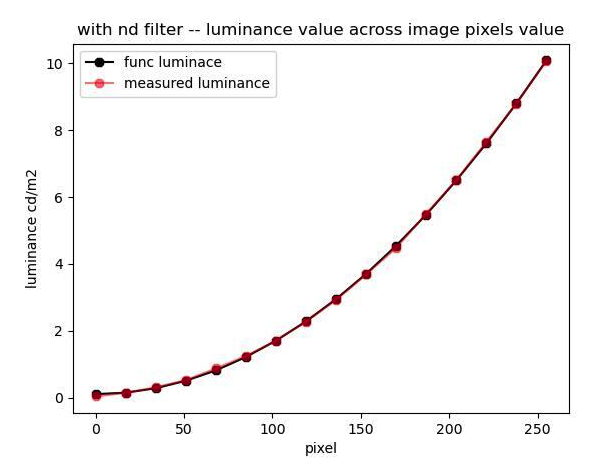

Parts list#
Computer#
Lambda vector workstation:
Operating system: Windows 10 Pro: Includes TensorFlow, PyTorch, CUDA, cuDNN, and Visual Studio.
Processor: Intel Core i9-10900X: 10 cores, 3.70 GHz, 19.25 MB cache
Motherboard: ASUS ws x299 sage
CPU Cooler: Air cooling
GPUs: 2 x RTX 3080
Memory: 128 GB
Operating system drive: 1 TB SSD (NVMe)
Data drive: 2 TB SSD (SATA)
Network: 2 x 1 Gigabit LAN (RJ45)
Case: Lambda Vector case
Cameras#
2 x imaging source cameras (DMK 37BUX28) + cables
2 x Navitar lenses (3.5mm EFL, F1/4 1/2”)
Two cameras are necessary if you would like to use 3d reconstruction.
Parts for building montior-supporting cage#
Thor labs parts#
5 x Raw, Unanodized 25 mm Rail Extrusion, 2 m
5 x Right-Angle Bracket for 25 mm Rails (4 + 1 for the camera)
2 x Drop-In T-Nut, 1/4”-20 Tapped Hole, 10 Pack
1 x 1/4”-20 Low-Profile Channel Screw, 5/8” Long, 50 Pack
2 x Hinge for 25 mm Rail Enclosures (for access door on back side)
3D printed parts#
Water delivery#
Teensy components#
The teensy circuit will need to be soldered to a perforated board:
Lickports & Water circuitery#
EW-06407-41 - Cole-Parmer, PTFE Tubing, 1/32”ID x 1/16”OD rigid tube that goes from the valves to the lickport cases.
2 x Lickport case, 3D printed.
Additional tubing material and synringes to complete the water delivery system:
Auxiliary Masterflex Peroxide-cured silicone tubing, L/S 13, 25 ft. for the water delivery system. Necessary to bridge syringes, valves, and lickport tubes together.
2 x 20 ml syringe with needle. Used as water reservoirs.
Photodiode teensy components (optional)#
Tolias lab set-up:
Teensy 4.0
TSL257, with a built-in circuit
MLAI lab setup:
OPT101 (Texas Instruments)
Mounting board for the photodiode - CJMCU-101
1 Megaohm resistor
Monitors#
4 x acer (SB241Y) + HDMI cables
3 monitors for the mouse setup, 1 for launching the task.
Calibration:
For all, brightness: 18.
For the side and back monitors: 153 pixels full screen image (see plot of luminance across pixels)
{kind=link}

Anti-reflection and filtering material#
4 x 0.9 neutral density filters for all screens, to decrease the monitor luminance to the 10 cd/m2 range.
1 x Anti-glare adhesive for the floor. The size is not exactly the same as the setup floor. The seam needs to be at the back of the box (close to the back monitor). Mice do not seem to show interest in it (or very briefly at the beginning).
1 x Light diffuser sheet to be placed between the two perspex floor plates.
Transparent Perspex box#
2 x Floor: 520 x 520 x 5 mm (transparent plastic = PMMA).
4 x Sides: 525 x 360 x 5 mm (transparent plastic = PMMA).
IR lights#
4 x lights
Power supply#
1 x Power Supply (12V Wall wart)